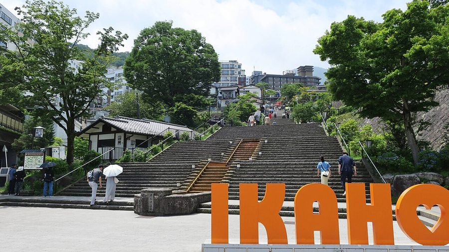
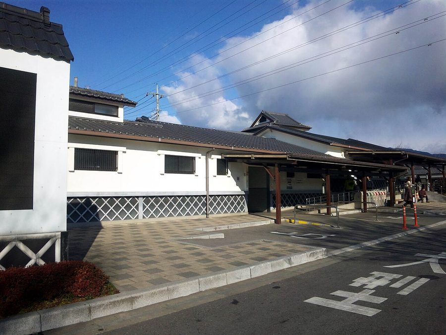
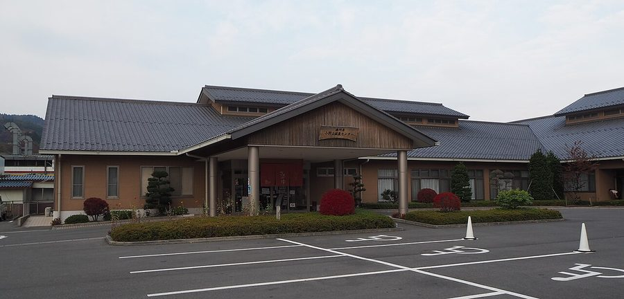
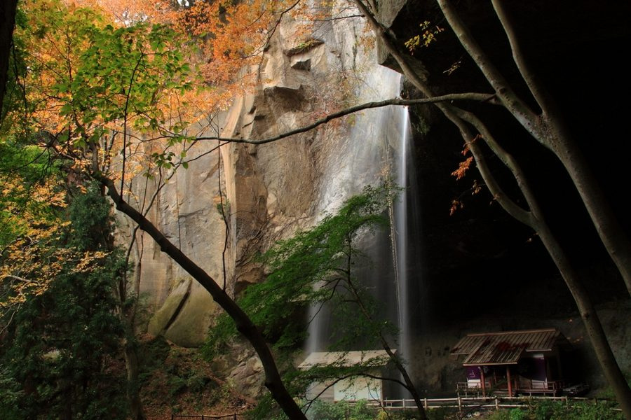

群馬県渋川市の日帰り温泉・銭湯・サウナ（38件）
寄り道スポット検索アプリ「ヨッテコ」の収録データから、群馬県渋川市の日帰り温泉・銭湯・サウナを営業時間・料金つきで一覧にしました（2026年8月時点）。
最も安いのは敷島温泉 温泉スタンド（100円）。最も遅くまで入れるのは大江戸温泉物語 Premium 伊香保（24:00まで）。朝風呂なら大江戸温泉物語 Premium 伊香保（7:00開店）。
群馬県渋川市はどんなまち？
数字で見る🔍群馬県渋川市
71,273人
人口（住民基本台帳・2026年1月1日）
240.27km²
面積
まちの横顔




- 位置と地形: 群馬県のほぼ中央、関東平野の最北西端に位置する市です。日本列島（沖縄を除く）のほぼ中央でもあり、「日本のへそ」の一つとされています。西に榛名山の裾野が広がり、東に赤城山を望み、北には子持山と小野子山がそびえます。北から利根川、西から吾妻川が流れ、市内白井で合流します。広さは東西6km、南北10km、周囲40kmです。
- 宿場町から交通の要衝へ: 東京都心からおよそ120kmの距離にあります。古くから宿場町として栄え、近代に入ってからも群馬県内の交通の要衝としての役割を担ってきました。
寄り道充実度（全国偏差値）
偏差値・順位は、ヨッテコ収録データ（2026年8月時点・26,033件）を市区町村別に集計した施設数の全国分布（1,728市区町村）から毎回算出しています。カードを押すとカテゴリ別の分析に切り替わります。
日帰り温泉から見た群馬県渋川市
市内の日帰り温泉は38件、全国44位タイ（上位2.5%）。——寄り道できる湯の数は、全国でも上位クラス。
38件
日帰り入浴施設（全国44位タイ・上位2.5%）
74偏差値
温泉充実度
1,000円
入浴料の中央値（判明25件・全国650円）
- 露天風呂がある店は63%、全国水準（46%）の1.4倍。西に榛名山、東に赤城山、北に子持山・小野子山を望み、利根川と吾妻川が合流する市。屋根のない湯船が当たり前、という土地柄なのでしょうか。
- 天然温泉を使う店は92%、全国水準（67%）の1.4倍。92%が天然温泉という構成は、地下から湧くものの豊かさを映しています。
- サウナを備える店は34%。全国水準（52%）より控えめです。サウナの有無で選ぶなら、先に確認しておきたい数字です。
- 21時を過ぎて入れる店は11%。全国水準（40%）より少なめです。立ち寄るなら日のあるうちに、と考えておくのが良さそうです。
- 入浴料の中央値は1,000円でした（判明25件）。全国の650円と比べて54%高い水準です。設備や湯の質を含めた、この土地の相場ということになります。
出典: 施設データ=ヨッテコ収録データ（26,033件・2026年8月時点）。偏差値・全国順位・全国水準は全1,728市区町村の分布から毎回算出。 / 人口=総務省「住民基本台帳に基づく人口、人口動態及び世帯数」（2026年1月1日現在） / 面積=国土地理院「全国都道府県市区町村別面積調」（2026年4月1日時点） / まちの解説=日本語版Wikipedia「渋川市」（https://ja.wikipedia.org/wiki/渋川市、2026年8月21日取得、CC BY-SA 4.0）より作成 / 写真=Wikimedia Commons（各キャプションに作者・ライセンスを記載）
曜日別の営業施設数
| 月 | 火 | 水 | 木 | 金 | 土 | 日 |
|---|---|---|---|---|---|---|
| 37 | 36 | 36 | 37 | 37 | 38 | 38 |
火・水曜日が最も休みが多く（各2件が定休）、年中無休は34件です。※営業時間データのある38件で集計
入浴料金の分布（大人）
| 500円以下 | 5件 | |
| 501〜800円 | 6件 | |
| 801〜1,200円 | 5件 | |
| 1,201円以上 | 9件 |
料金が確認できた25件で集計。
施設一覧
| 施設 | 営業時間 | 料金（大人） |
|---|---|---|
| Komorebiテラス ばんどうのゆ 天然温泉露天風呂サウナ 利根川・榛名山と前橋・高崎の街並みを見下ろす高台の展望露天風呂が自慢の日帰り温泉。ロウリュ＆サーマルスパのSPAゾーンも… | 10:00〜21:00 | 750円 |
| お宿 かつほ 天然温泉 | 11:00〜14:00 | — |
| さくらい旅館 天然温泉露天風呂 | 12:00〜14:50 | 2,800円 |
| キャンプ＆温泉＆サウナ LUONTO（ルオント） 天然温泉サウナ 伊香保温泉の黄金の湯と白銀の湯を利用したキャンプ・温泉・サウナ複合施設。バレルサウナと露天風呂で山の自然を満喫できる。 | 10:30〜18:30 | 1,700円 |
| ヘルシーパル赤城 天然温泉露天風呂 敷島温泉の利根川沿いに佇む宿。川のせせらぎと榛名山を望む絶景の露天風呂が自慢。 | 11:00〜20:00 | 700円 |
| ホテル ニュー伊香保 天然温泉露天風呂 | 11:30〜14:30 | 1,250円 |
| ホテル松本楼 天然温泉露天風呂サウナ 最上階8階から赤城山など群馬の雄大な景色を望める展望露天風呂と、2フロアの大浴場でゆったり湯浴み。 | 10:30〜14:00（木休） | 1,500円 |
| 伊香保 保科美術館 | 09:00〜16:00 | 1,000円 |
| 伊香保温泉 いかほ秀水園 天然温泉露天風呂 | 09:00〜18:00 | — |
| 伊香保温泉 お宿 玉樹 天然温泉露天風呂サウナ 石段街の玄関口に400年前から続く湯宿。黄金と白銀の二湯で古き良き伊香保の風情を感じる。 | 11:30〜14:30（月・金休） | 1,500円 |
| 伊香保温泉 よろこびの宿 しん喜 天然温泉露天風呂 | 15:00〜19:00 | — |
| 伊香保温泉 ホテル天坊 天然温泉露天風呂サウナ 伊香保温泉最大級の旅館、「こがねの湯」「しろがねの湯」の２つの温泉を有する。天然記念物の三波石を使用した大岩風呂が特徴。 | 11:00〜14:00（火・水休） | — |
| 伊香保温泉 丸本館 天然温泉 | 13:00〜16:00 | — |
| 伊香保温泉 山陽ホテル 天然温泉露天風呂サウナ 伊香保温泉の旅館で、白銀の湯と呼ばれる無色の温泉を源泉掛け流しで提供しています。 | 15:00〜18:00 | 1,210円 |
| 伊香保温泉 旅館ふくぜん 天然温泉露天風呂 | 14:00〜21:00 | — |
| 伊香保温泉 松本楼 洋風旅館ぴのん 天然温泉 | 11:00〜14:00 | — |
| 伊香保温泉 横手館 天然温泉 | 15:00〜19:00 | 1,130円 |
| 伊香保温泉 石段の湯 天然温泉 茶褐色の源泉を石造りの浴槽にかけ流し。石段街のすぐそばにある内湯のみの共同浴場（露天風呂なし）。 | 10:00〜20:00 | 800円 |
| 伊香保温泉 福一 天然温泉露天風呂サウナ 伊香保で数少ない黄金と白銀の二湯を備える大浴場。サウナと豊富なアメニティを完備した源泉かけ流し施設。 | 14:00〜17:00 | 2,000円 |
| 伊香保温泉 美松館 天然温泉露天風呂 | 15:00〜19:00 | — |
| 伊香保温泉飲泉所 天然温泉 | 09:00〜18:00 | — |
| 伊香保露天風呂 天然温泉露天風呂 黄金の湯源泉のすぐそばにある露天風呂のみの共同浴場。「子宝の湯」として古くから親しまれる。 | 09:00〜18:00 ※曜日により異なる | 600円 |
| 和心の宿 大森 天然温泉露天風呂サウナ 伊香保温泉の日帰り入浴施設 | 12:30〜15:00（火・水休） | 1,200円 |
| 塚越屋七兵衛 別館 香雲館 天然温泉 伊香保温泉の旅館、全客室に露天風呂付き。100%天然温泉かけ流し「黄金の湯」を使用。 | 23:20〜24:00 | 150円 |
| 大江戸温泉物語 Premium 伊香保 天然温泉露天風呂サウナ | 07:00〜10:00 ※曜日により異なる | 1,150円 |
| 如心の里 ひびき野 天然温泉露天風呂 | 13:00〜21:00 | 1,700円 |
| 小野上温泉 旅館きくむら 天然温泉 | 13:00〜15:00 | — |
| 小野上温泉センター ハタの湯 天然温泉露天風呂サウナ 「美人の湯」として知られる小野上温泉の代表的日帰り温泉施設。100%源泉掛け流し。 | 09:00〜21:00 | 830円 |
| 岸権 辰の湯 天然温泉 | 08:00〜18:00 | — |
| 市川別館 晴観荘 天然温泉露天風呂 | 15:00〜18:00 | — |
| 心に咲く花 古久家 天然温泉露天風呂 伊香保の象徴である黄金の湯を源泉から直接引く。子宝の湯で知られる歴史あるお湯を堪能。 | 15:00〜18:00 ※曜日により異なる | 2,200円 |
| 敷島温泉 温泉スタンド 天然温泉 | 09:00〜18:00 | 100円 |
| 渋川天然温泉 花湯スカイテルメリゾート 天然温泉露天風呂サウナ 関越道渋川伊香保ICすぐ。地上15mから関東平野を一望できる天空温泉。源泉掛け流し100%、北関東最大級の岩盤浴NEST… | 10:00〜22:00 | 750円 |
| 渋川市地域福祉センター こもちの湯 高齢者向けの福祉センター内のお風呂。入浴と各種講座・活動の場を提供する施設です。 | 09:30〜19:30 | 100円 |
| 渋川市渋川地域福祉センター 昭和45年開設の渋川地域福祉センター。高齢者と市民向けの健康増進と生きがいづくりの施設。 | 09:30〜15:00 | 200円 |
| 温泉宿 塚越屋七兵衛 天然温泉露天風呂サウナ | 14:00〜17:00 | — |
| 花湯ユートピア赤城 天然温泉露天風呂サウナ 敷島駅近く。充実したサウナと温活カフェ「NEST」、美肌の湯を楽しめる大型温浴リゾート施設。 | 10:00〜23:00 | 600円 |
| 金島温泉 富貴の湯 天然温泉露天風呂 | 10:00〜21:00 | 500円 |
現在地から近い順に探すなら、地図アプリ「ヨッテコ」
全国26,000件の温泉・道の駅・アイスのお店を登録不要で検索。到着時刻に営業しているかの目安も表示します。